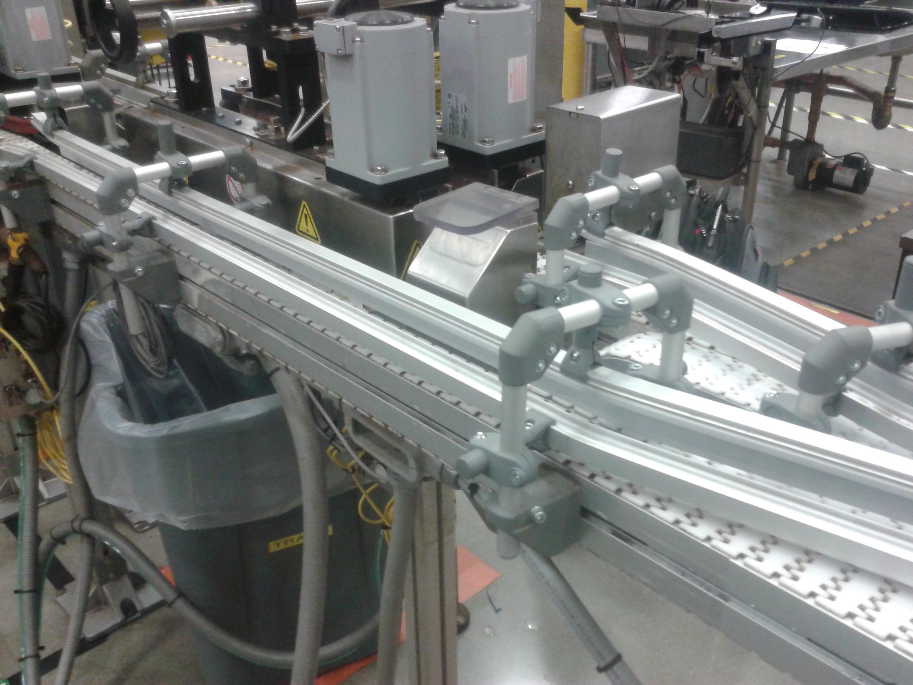

Codice interno: HT-01

I nastri per alte temperature sono progettati per resistere a condizioni termiche estreme. Realizzati in materiali speciali come silicone, teflon (PTFE) o fibre tecniche, garantiscono stabilità dimensionale e durata anche oltre i 200°C.
Realizziamo nastri per alte temperature su misura.
Contattaci